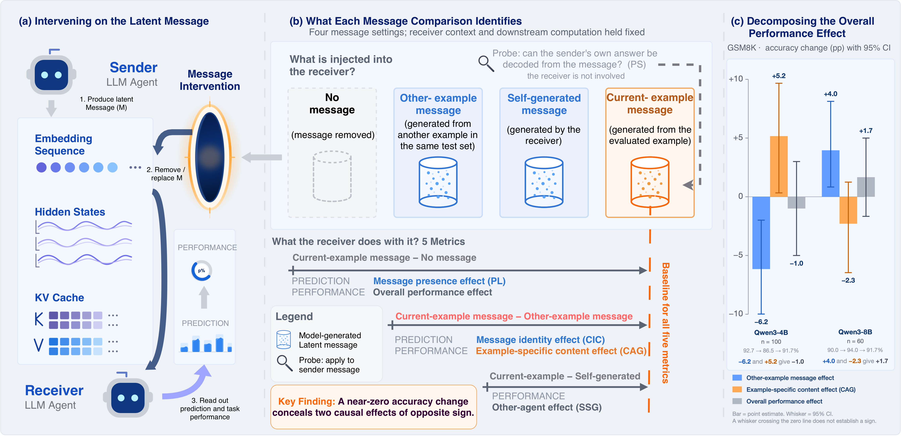
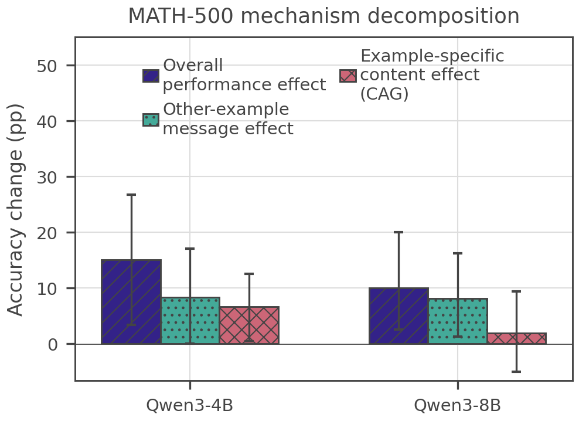
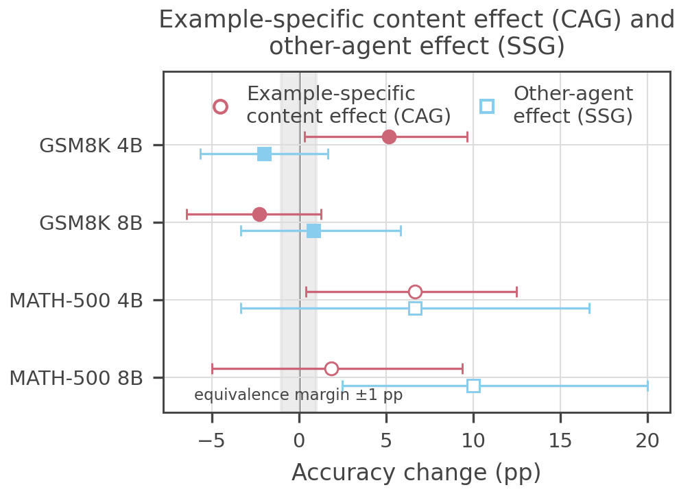

Why it matters왜 중요한가
A benchmark gain is not evidence of communication — correlation at the channel is not causation through it.
벤치마크 향상은 통신의 증거가 아니다 — 채널에서의 상관은 채널을 통한 인과가 아니다.
Every latent-communication result in this archive — LatentMAS's +14.6%, C2C's steering gains, relay compression "beating full" — rests on the same inference: performance went up, therefore information flowed. But the gain could come from extra computation the channel adds, from any message's structural presence, or from redundant reasoning the receiver would produce anyway. This paper builds the control experiments the field skipped: hold the receiver, weights, prompt, and decoding fixed, and intervene only on the message at the sender→receiver boundary (defined precisely for embeddings, hidden states, and KV caches). It is the multi-agent version of a causal probe — and the first standardized audit suite for this literature.
이 아카이브의 모든 잠재 통신 결과 — LatentMAS의 +14.6%, C2C의 조종 이득, "full을 이기는" relay 압축 — 는 같은 추론에 기댄다: 성능이 올랐으니 정보가 흘렀다. 그러나 그 이득은 채널이 더하는 추가 연산에서, 아무 메시지든 구조적 존재에서, 혹은 수신자가 어차피 만들 중복 추론에서 올 수 있다. 이 논문은 분야가 건너뛴 통제 실험을 세운다: 수신자·가중치·프롬프트·디코딩을 고정하고, 송신자→수신자 경계(임베딩·은닉 상태·KV 캐시 각각에 정밀 정의)에서 메시지에만 개입한다. 멀티에이전트판 인과 프로브이자, 이 문헌 최초의 표준화된 감사 도구다.

By the numbers핵심 숫자
content helps (net "−1.0")GSM8K-4B: 존재는 해롭고
내용은 이롭다 (합계 "−1.0")
OME +3.96, CAG −2.294B→8B에서 부호 반전:
OME +3.96, CAG −2.29
8.33 presence + 6.67 contentMATH-500-4B 전체 —
존재 8.33 + 내용 6.67
sender's — no other-agent valueGSM8K-4B: 자가 생성 ≈ 송신자
— 타 에이전트 가치 없음
agent value without content valueMATH-500-8B SSG [2.5, 20.0] —
내용 가치 없는 에이전트 가치
/ message settings지표 (PS·PL·CIC·CAG·SSG)
/ 메시지 설정
In one diagram한 장의 그림
Idea: five measurements, two decompositions아이디어: 다섯 측정, 두 분해
PS · PL · CIC
Positive Signaling: is a sender variable (e.g. its answer's correctness) decodable from the message (mutual-information lower bound)? Positive Listening: does message presence move the receiver's first-token distribution (JSD vs M₀)? CIC: does message identity matter (JSD vs M_oth)? On Qwen3-8B, CIC ≪ PL — the receiver reacts to having a message far more than to which message it is.
Positive Signaling: 송신자 변수(예: 그 답의 정오)가 메시지에서 복호 가능한가(상호정보 하한)? Positive Listening: 메시지의 존재가 수신자 첫 토큰 분포를 움직이는가(M₀ 대비 JSD)? CIC: 메시지의 정체가 중요한가(M_oth 대비 JSD)? Qwen3-8B에선 CIC ≪ PL — 수신자는 어떤 메시지인지보다 메시지가 있다는 것에 훨씬 크게 반응한다.
CAG · SSG
Content-Attributable Gain = accuracy(M_cur) − accuracy(M_oth): the value of this example's content beyond any message's structure. Self-Substitution Gap = accuracy(M_cur) − accuracy(M_self): what a separate agent adds beyond the receiver spending the same compute on itself — exactly the compute-matched control earlier latent-comm papers never ran. Paired bootstrap CIs, ±1pp equivalence margin.
Content-Attributable Gain = 정확도(M_cur) − 정확도(M_oth): 아무 메시지의 구조를 넘어 이 예제 내용의 가치. Self-Substitution Gap = 정확도(M_cur) − 정확도(M_self): 수신자가 같은 연산을 스스로에게 쓸 때 대비 별도 에이전트가 더하는 것 — 기존 잠재 통신 논문들이 한 번도 안 돌린 바로 그 compute-matched 통제다. 짝지은 부트스트랩 CI, ±1pp 동등성 마진.
How it works어떻게 작동하나
- Fix the boundary경계를 고정Define exactly where sender output enters the receiver — embedding sequence (CIPHER), transmitted hidden states (LatentMAS, Interlat), or sender-produced KV rows (C2C, DroidSpeak) — and swap only that.송신자 출력이 수신자로 들어가는 지점 — 임베딩 열(CIPHER), 전달 은닉 상태(LatentMAS, Interlat), 송신자 생성 KV 행(C2C, DroidSpeak) — 을 정확히 정의하고 그것만 교체한다.
- Generate the four message worlds네 가지 메시지 세계를 생성M_cur (real), M₀ (none), M_oth (same sender, different example, length-matched, K=4 per example), M_self (receiver-made, compute-matched).M_cur(실제), M₀(없음), M_oth(같은 송신자·다른 예제·길이 일치, 예제당 K=4), M_self(수신자 제작·연산 일치).
- Measure and decompose측정하고 분해Task accuracy per world gives OPE = OME + CAG and CAG = DSC + SSG by identity; first-token JSD gives PL and CIC; a probe on M_cur gives PS.세계별 과제 정확도가 항등식으로 OPE = OME + CAG와 CAG = DSC + SSG를 주고, 첫 토큰 JSD가 PL·CIC를, M_cur 프로브가 PS를 준다.
- Validate the machinery장치를 검증Hard checks (replacing M_oth with M_cur must zero CIC/CAG), message-distribution diagnostics, and noise/scramble controls keep the audit itself honest.하드 체크(M_oth를 M_cur로 바꾸면 CIC/CAG가 0이어야 함), 메시지 분포 진단, 노이즈/뒤섞기 통제가 감사 자체를 정직하게 유지한다.
Results — the aggregate score was hiding everything결과 — 집계 점수가 모든 걸 숨기고 있었다
| Task · Model | OPE (overall) | OME (presence) | CAG (content) |
|---|---|---|---|
| GSM8K · 4B | −1.00 | −6.17 | +5.17 |
| GSM8K · 8B | +1.67 | +3.96 | −2.29 |
| MATH-500 · 4B | +15.00 | +8.33 | +6.67 |
| MATH-500 · 8B | +10.00 | +8.13 | +1.88 |
| ARC-C · 4B | −0.63 | −2.97 | +2.34 |


What to take away그래서, 가져갈 것
OPE = OME + CAG should become mandatory reporting. Any latent-comm paper can run the M_oth swap for a few GPU-hours; without it, "our channel communicates" is unfalsified marketing.
OPE = OME + CAG는 의무 보고가 되어야 한다. 어떤 잠재 통신 논문이든 몇 GPU시간이면 M_oth 교체를 돌릴 수 있다; 그것 없이 "우리 채널은 통신한다"는 반증되지 않은 마케팅이다.
SSG is the control the field owed us. If the receiver talking to itself matches the sender's message, the system is paying multi-agent costs for single-agent compute scaling — exactly the confound flagged in our LatentMAS full review.
SSG는 분야가 빚졌던 통제 실험. 수신자의 혼잣말이 송신자 메시지와 대등하면, 그 시스템은 단일 에이전트 연산 스케일링에 멀티에이전트 비용을 내는 것 — 우리 LatentMAS 풀리뷰가 짚었던 바로 그 교란이다.
Mechanisms flip with scale. The same channel is presence-hurt/content-help at 4B and the reverse at 8B — a single-model result about latent communication generalizes even less than we feared.
메커니즘은 규모에 따라 뒤집힌다. 같은 채널이 4B에선 존재-해악/내용-이득, 8B에선 그 반대 — 잠재 통신의 단일 모델 결과는 우려보다도 일반화가 안 된다.
Prediction sensitivity ≠ task value. Big first-token JSD can coexist with zero accuracy effect and vice versa — interpretability probes and benchmarks are complementary evidence, not substitutes.
예측 민감도 ≠ 과제 가치. 큰 첫 토큰 JSD가 정확도 무효과와 공존할 수 있고 그 역도 성립 — 해석 프로브와 벤치마크는 대체재가 아니라 상보적 증거다.